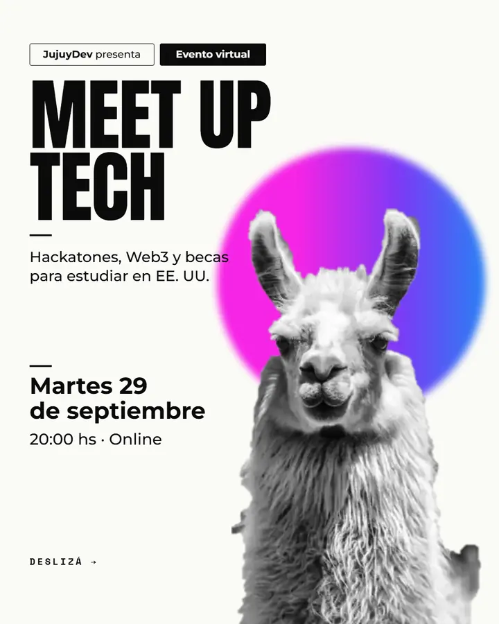
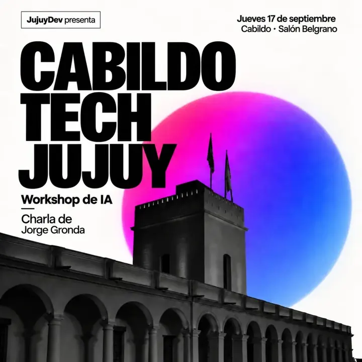
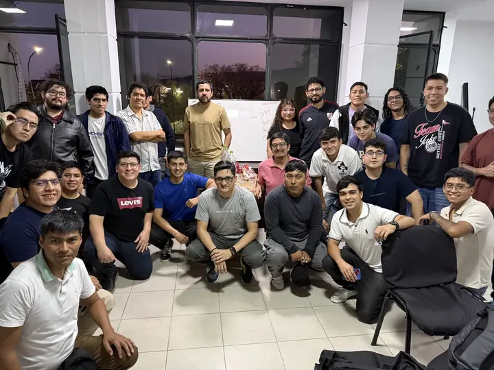

Eventos
Meetups, talleres y hackatones de la comunidad tech de Jujuy. Presenciales en San Salvador de Jujuy o virtuales.
Lo que
viene
Cuando publiquemos un encuentro, aparece acá. Mientras tanto, mirá el calendario en Luma →
¿Tenés una idea para el que sigue?
Charlas, talleres, hackatones o una juntada para tomar algo. Si querés organizar o dar una charla, contanos.
Ya
pasaron
Martes
Meet Up Tech #2
77 personas se conectaron para prepararse para el hackatón de Superteam AR y Monad, con charlas sobre hackatones, Web3 y becas para estudiar en EE. UU.
Ver cómo fue →
Jueves
Cabildo Tech Jujuy
Una noche para construir, emprender y conectar. Panel con Jorge Gronda, Adrián Silisque y Leo Cagliari (LeoDefi) sobre IA, productos digitales y Web3, moderado por Franco Durán.
Ver cómo fue →
Jueves
Primer Meet Up dev Jujuy
51 personas se sumaron al primer encuentro de la comunidad: sin charlas técnicas ni nivel mínimo, solo conocernos y ver quién hace qué en Jujuy.
Ver cómo fue →
No te pierdas
el próximo
Anunciamos cada encuentro primero en el grupo de WhatsApp y en @jujuy.dev.